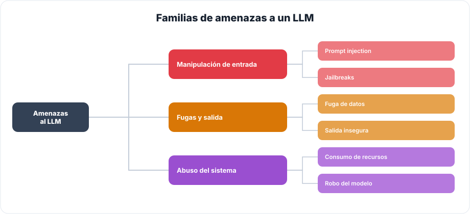
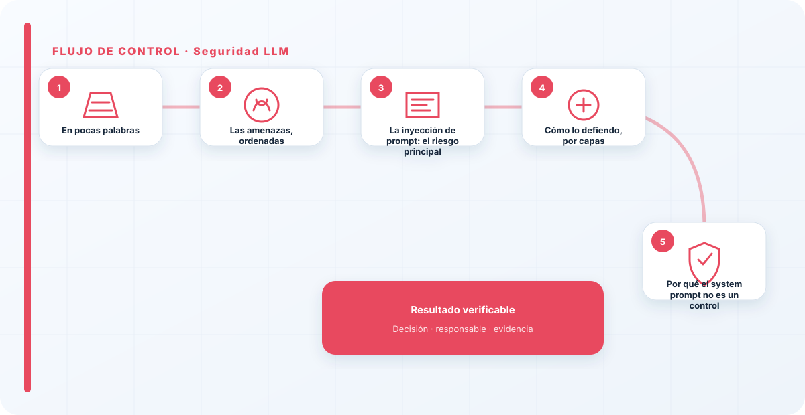
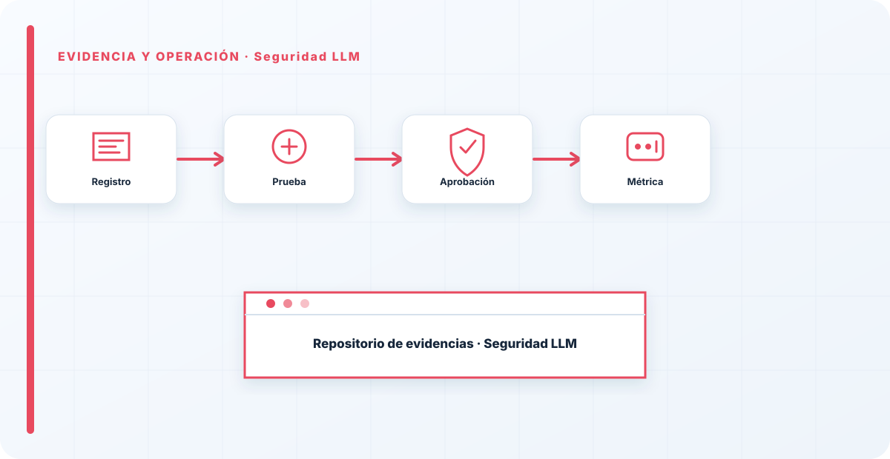

En pocas palabras
Un LLM procesa lenguaje, y el lenguaje es el vector de ataque. No hay que pensar en él como en una aplicación que recibe datos limpios y estructurados: hay que asumir, de partida, que todo lo que le llega es potencialmente hostil —lo que escribe el usuario, lo que trae un documento, lo que devuelve otra herramienta o una web—. Asegurar un LLM es aceptar esa premisa incómoda y poner controles antes de que la entrada llegue al modelo y después de que salga, en lugar de confiar en que el modelo "se porte bien". El modelo no es tu barrera de seguridad; es lo que hay que proteger.
Las amenazas, ordenadas
Antes de defender conviene saber de qué. Me apoyo en el trabajo de OWASP para aplicaciones LLM, que ordena estos riesgos, y los agrupo en tres familias:

Por un lado, la manipulación de la entrada —prompt injection y jailbreaks—, donde alguien mete instrucciones que secuestran el comportamiento del modelo. Por otro, las fugas y la salida insegura —datos que se escapan en las respuestas, salidas que se usan sin validar y provocan daño aguas abajo—. Y por último, el abuso del sistema —agotar recursos, disparar el coste, robar el modelo a base de consultas—. Tener este mapa delante evita el error de defenderse solo del ataque de moda y dejar los otros dos frentes abiertos.
La inyección de prompt: el riesgo principal
Si tuviera que elegir una sola amenaza para tomarme en serio, es la inyección de prompt, porque casi todo lo demás cuelga de ella: si puedo inyectar, puedo intentar sacar datos, abusar de herramientas o saltarme reglas. Y tiene tres formas que conviene distinguir. La directa es la obvia: el atacante escribe la instrucción maliciosa en el chat. La indirecta es la traicionera: la instrucción viene escondida en un documento, un correo o una web que el sistema procesa; el atacante no te habla a ti, le habla al modelo a través de un fichero. Y la persistente es la que se queda guardada —en una memoria, en un dato— y actúa después.
La indirecta es la que más subestima la gente, y la más peligrosa en sistemas con RAG o agentes, porque el contenido externo entra como "contexto de confianza" cuando no debería serlo. Todo lo que el modelo lee de fuera es entrada no confiable, punto.

Cómo lo defiendo, por capas
La defensa no es un único muro, son varias capas que asumen que alguna fallará. Valido la entrada y saneo el contexto antes de que llegue al modelo. Valido la salida antes de mostrarla y, sobre todo, antes de ejecutar cualquier acción a partir de ella —que una respuesta desencadene una acción sin revisar es de los errores más caros—. Pongo guardrails con políticas explícitas de lo que el modelo puede y no puede hacer. Y limito el privilegio de lo que el modelo puede ejecutar, para que aunque lo secuestren, el daño sea pequeño.
Ninguna de estas capas para el 100% de los ataques por sí sola; por eso son capas. El objetivo realista no es la inmunidad —que no existe—, es reducir la superficie y contener el impacto. Todo esto forma parte del AI Hardening, donde lo veo de forma integral.
Por qué el system prompt no es un control
El error que más me encuentro auditando sistemas con LLM es confiar en el system prompt como si fuera una barrera de seguridad. No lo es. El system prompt es una sugerencia fuerte sobre cómo debe comportarse el modelo, no una barrera técnica que un atacante no pueda rodear. En cuanto alguien prueba en serio, lo esquiva. La seguridad de verdad no está en pedirle bien al modelo con instrucciones cada vez más elaboradas; está en lo que haces alrededor: validación, guardrails, y sobre todo mínimo privilegio en lo que el modelo puede tocar y ejecutar.
El error que más me encuentro es confiar en el system prompt como si fuera un muro. No lo es. En cuanto pruebas en serio, ves que la protección de verdad no está en pedirle bien al modelo, sino en lo que le dejas hacer después. La inyección no se elimina; se contiene limitando privilegios. Un LLM al que, aunque lo secuestren, solo puede hacer cosas inofensivas, es un LLM seguro aunque su system prompt sea rompible.
Los errores que veo una y otra vez
- Confiar en el system prompt como control de seguridad.
- Validar la entrada pero no la salida, y ejecutar acciones a ciegas.
- Olvidar la inyección indirecta, la que viene en un documento o una web.
- Dar al LLM permisos amplios "para que funcione".
- No probar con ataques reales antes de desplegar.
- Esperar inmunidad total en vez de contener el impacto.
Cómo lo llevaría a un entorno real
Cuando aterrizo seguridad llm en una organización, no empiezo por comprar una herramienta ni por redactar veinte páginas. Empiezo por dibujar qué ocurre hoy: quién solicita el cambio, quién lo aprueba, qué sistemas intervienen, qué datos cruzan el proceso y quién se entera cuando algo falla. Ese dibujo suele descubrir más problemas que cualquier checklist. En seguridad de IA, lo peligroso no es solo carecer de controles; también lo es creer que existen porque alguien los escribió una vez.
Después separo lo imprescindible de lo deseable. Lo imprescindible debe poder comprobarse: un responsable identificado, una regla clara, una evidencia fechada y un mecanismo para reaccionar. En este caso revisaría especialmente Seguridad, responsable y control. No me vale una respuesta del tipo «lo gestiona el proveedor» o «eso lo mira seguridad». Necesito saber qué persona toma la decisión, con qué información y dentro de qué plazo.
La implantación debe crecer con el riesgo. Un piloto interno puede funcionar con una ficha breve y una revisión manual. Un sistema que afecta a clientes, empleados, dinero o información sensible necesita segregación de funciones, pruebas independientes, monitorización y un expediente mantenido. Mi criterio es sencillo: cuanto más difícil sea deshacer el daño, más fuerte debe ser la barrera antes de producción.
Decisiones que deben quedar por escrito
Hay decisiones que no deberían vivir en una reunión ni en un mensaje de chat. Para seguridad llm dejaría documentados el alcance, los supuestos, los límites de uso, las excepciones aceptadas y las condiciones que obligan a detener o reevaluar. El documento no tiene que ser enorme, pero sí debe permitir que otra persona entienda por qué se hizo lo que se hizo.
También registraría quién puede cambiar evidencia, quién valida Seguridad y quién recibe las alertas relacionadas con responsable. Cuando esas tres responsabilidades se mezclan, aparece el clásico problema: el mismo equipo construye, aprueba y declara que todo funciona. No siempre se puede separar por completo, sobre todo en organizaciones pequeñas, pero al menos debe existir una revisión por alguien que no dependa del éxito inmediato del despliegue.
Las excepciones merecen un tratamiento propio. Una excepción sin fecha de caducidad acaba convirtiéndose en la arquitectura real. Por eso exigiría motivo, riesgo aceptado, responsable, compensaciones, fecha de revisión y criterio de cierre. Si falta uno de esos elementos, no es una excepción gestionada; es una deuda invisible.

Un ejemplo práctico
Imaginemos que un equipo quiere incorporar seguridad llm a un servicio que ya está en producción. La propuesta promete reducir tiempos y automatizar tareas, pero utiliza componentes que cambian con frecuencia. Antes de aprobarlo, pediría una prueba limitada, un inventario de dependencias, un flujo de datos y una definición clara de qué acciones quedan fuera del alcance.
Durante la prueba recogería resultados normales y casos límite. No solo miraría si funciona; comprobaría qué ocurre cuando faltan datos, cambia una versión, se pierde conectividad, llega una entrada manipulada o un usuario intenta superar sus permisos. Ahí es donde se ve si el diseño aguanta. En muchas pruebas felices todo parece seguro porque nadie ha intentado romper la hipótesis de partida.
Si los resultados son aceptables, la salida a producción tendría condiciones: versión fijada, configuración aprobada, logs disponibles, responsables de guardia, procedimiento de rollback y revisión tras las primeras semanas. Si alguno de esos elementos no existe, prefiero retrasar el despliegue. Un día de demora suele ser más barato que investigar después un comportamiento que nadie puede reconstruir.
Qué evidencias guardaría
Para demostrar que el control funciona conservaría evidencias que cuenten una historia completa, no capturas sueltas. La historia debe enlazar necesidad, decisión, implementación, prueba y operación. En seguridad llm eso incluye como mínimo la ficha del activo, el diagrama vigente, la configuración aprobada, el resultado de las pruebas y el registro de cambios.
No guardaría información por acumular. Si los logs contienen prompts, documentos, datos personales o secretos, aplicaría minimización, control de acceso y retención. La evidencia debe ayudar a investigar y auditar sin crear una segunda fuga de información. Es frecuente endurecer el sistema principal y dejar un repositorio de evidencias abierto a demasiadas personas.
- Propietario y finalidad de seguridad llm, con fecha de revisión.
- Inventario de Seguridad, responsable y dependencias asociadas.
- Criterios de aceptación y resultados sobre control y evidencia.
- Configuración efectiva, versión y aprobación del cambio.
- Alertas, incidentes, excepciones y acciones correctivas cerradas.
Señales de que el control no está funcionando
El primer síntoma es que nadie sabe responder con rapidez quién es el responsable. El segundo es que la documentación describe una versión distinta de la que está operando. El tercero es que las alertas existen, pero llegan a un buzón que nadie revisa. Cuando aparecen esos tres síntomas, el problema no es tecnológico: el control se ha desconectado de la operación.
También desconfío de las métricas demasiado perfectas. Cero incidentes, cero excepciones y cien por cien de cumplimiento pueden significar excelencia, pero con frecuencia significan que no estamos mirando. Prefiero indicadores que enseñen tendencia: tiempo de corrección, antigüedad de excepciones, cobertura de pruebas, cambios sin revisión y reincidencias.
Por último, revisaría el comportamiento después de cada cambio significativo. En IA, una actualización de modelo, dataset, prompt, herramienta, permiso o proveedor puede alterar el riesgo sin cambiar el nombre del servicio. Si el proceso solo reevalúa cuando se crea un proyecto nuevo, se quedará ciego durante la mayor parte de la vida útil.
Mi criterio de cierre
Considero que seguridad llm está razonablemente controlado cuando el equipo puede explicar el proceso sin depender de una sola persona, reconstruir una decisión con evidencias y detener el servicio sin improvisar. No busco perfección documental; busco que la organización pueda tomar decisiones repetibles bajo presión.
El cierre no consiste en marcar todas las casillas. Consiste en demostrar que los riesgos relevantes tienen propietario, que los controles se prueban y que las desviaciones producen una acción. Si la evidencia no cambia ninguna decisión, probablemente estamos generando burocracia. Si una decisión importante no deja evidencia, estamos creando fragilidad.
Este enfoque es el que intento mantener en toda CyberLibrary AI: explicar el control de forma que lo entienda negocio, pero con suficiente profundidad para que arquitectura, seguridad, auditoría y operaciones puedan aplicarlo de verdad.
Referencias y marcos relacionados
Contenido educativo y técnico. No sustituye asesoramiento jurídico ni una auditoría formal.